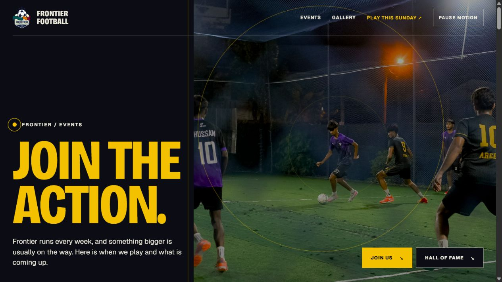
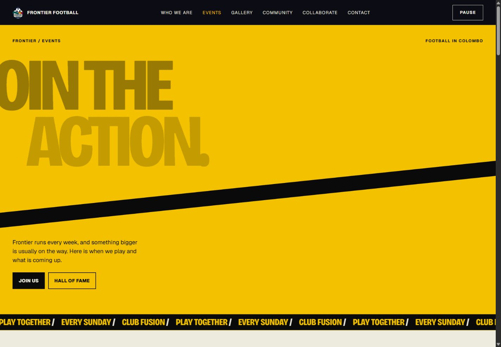

A / MatchdayA photo-led opening, moving pitch graphics and generous champion spreads. More restrained; each winner gets more space.Open Matchday
Recommended for more energyB / ClubhouseA bold yellow opening, moving strips and a wall of winner posters. Stronger colour changes as you scroll.Open Clubhouse